XR2の打ち上げ・軌道投入
XR2 Ravenstarをスクラムジェットを使って打ち上げる手順について解説します。
今回はフライトスティックは使いません。（キーボードとテンキーのみ）
打ち上げの準備
ゲームを開始したら、すぐにAPUを停止する。※
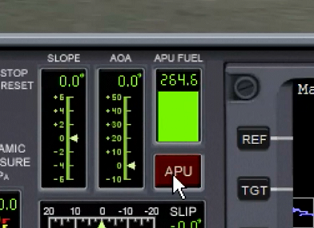
※APU燃料の無駄づかいを防ぐため
EXTERNAL COOLINGをONにする。
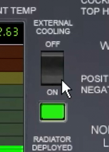
出発のタイミングを待つ。
出発直前にAPUを起動。
右クリックでAF CTRLをONにする。
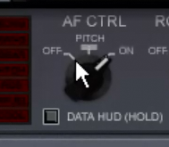
EXTERNAL COOLINGをOFFにする。
打ち上げ
最初は通常エンジンを使って離陸し、途中からスクラムジェットエンジンに切り替えます。
離陸
メインエンジン全開で離陸。（ Ctrl と + の同時押し）
ランディングギアが風圧で破損しないように、離陸したらいったんエンジン出力を下げる。（ Ctrl と - の同時押し）
Gを押してランディングギアを格納する。
必要な方位になるまで旋回する。
上昇
キーボードのLを押して、Attitude Holdオートパイロットを起動。
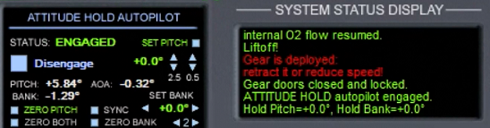
メインエンジンを全開にする。
テンキーの4 or 6、2 or 8を何度か押して、方位角を維持しつつ、迎え角を60°にする。
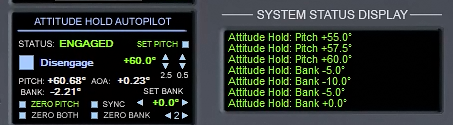
高度20kmを超えるまで上昇する。
20kmを超えたら、テンキーの8を何度か押して、迎え角をゼロまで下げる。
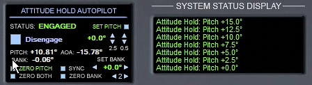
Surface MFDを見ながら、マッハ3.5（M 3.5）になるまで待つ。
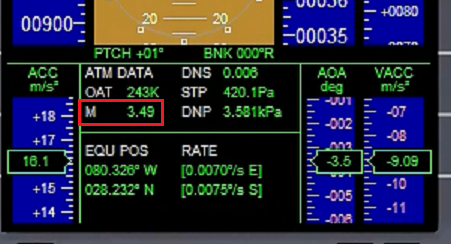
スクラムジェットエンジンに点火
マッハ3.5を超えたら、SCRAM DOORSをOPENにする。
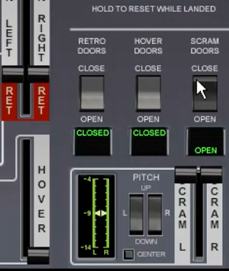
SCRAMエンジンを全開にする。（2Dパネル上のレバー※をマウスでドラッグする）
※SCRAM L & SCRAM Rの両方
同時にメインエンジンを停止する。（テンキー * ）
スクラムジェットエンジンでの巡航
キーボードの3を押して、船体温度を確認する。
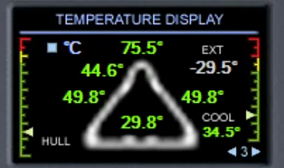
温度が赤色を超えたら機首を上げる。（テンキー2）
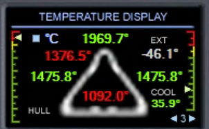
温度が下がったら機首を下げる。（テンキー8）
できるだけ高度を上げすぎないようにしつつ加速を続ける。
Align MFDを見ながら、機体を左右に傾けて（テンキー4 or 6）、RIncをできるだけ小さくする。
スクラムジェットの燃料がなくなるか、エンジンがオーバーヒートするまで加速する。
スクラムジェットエンジンを停止
DIFFUSERの温度表示が赤くなったら（オーバーヒート）、SCRAMエンジンを切る。
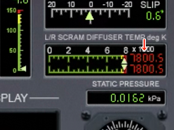
SCRAM DOORSをCLOSEにする。
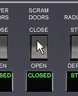
メインエンジンを全開にする。（ Ctrl と + の同時押し）
軌道投入
XR2はDelta Gliderより大気の影響を受けやすい。
高度100km以下なら、Align MFDを見ながら機体を左右に傾けるだけで軌道修正ができる。
軌道投入噴射
高度100kmを超えたら、キーボードLを押してオートパイロットを停止する。
メインエンジンとProgradeオートパイロットを使って、通常の手順で軌道投入する。
ラジエータを展開する
宇宙に出たら、RADIATORをDEPLOYにする。

これで冷却材の温度が下がる。
重要：APUを停止する。
燃料計左下のボタンを長押しして、余ったSCRAM燃料を投棄する。
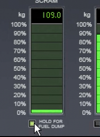
ここから先のランデブーなどの操作は、Delta Gliderとほぼ同じです。
次回は、XR2とAerobrake MFDによる、フライトスティックを使わない着陸について解説します。
XR2とAeroBrake MFDでの着陸